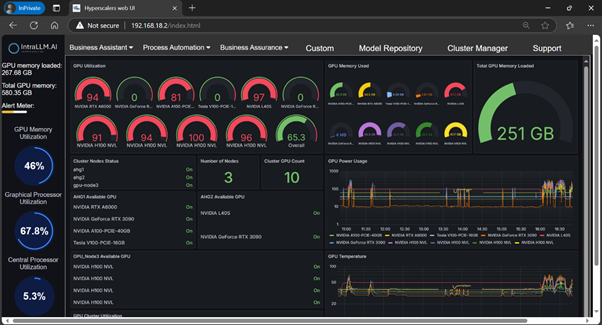

Software · QORINAI proprietary platform
Your own AI, inside your own network.
IntraLLM is QORINAI's turn-key enterprise-AI platform — everything an IT department needs to inference and train its own large language and multimodal models on-premises or in a dedicated private cloud. Hardware, GPU orchestration, model repository, assistants, automation and assurance: one console, one vendor, and your data never leaves the building.

Why it exists
Every enterprise will need to train and mature its own AI models. The question is whether that knowledge stays inside the company — or leaks out through a public API.
- 01 · IP RETENTIONKnowledge that stays when people leave
When staff move on they take know-how with them. Models trained inside the network turn that experience into a permanent, queryable company asset.
- 03 · SOVEREIGNTYCompliance by architecture, not by contract
No enterprise data or prompts are sent to external proprietary LLMs, so privacy, data-protection and sovereignty obligations are met without relying on a vendor's promise.
- 05 · ECONOMICSPredictable cost at enterprise scale
Per-token API bills grow with every user and every agent. Dedicated GPUs in your own hall or a QORINAI tenancy give a flat, forecastable cost per month.
Platform modules
Six enterprise-AI functions in one console.
IntraLLM is organised the way an IT department buys and operates: business-facing modules on top, model management in the middle, cluster operations underneath.
The stack
Bottom-up, from the GPU to the user.
Most "enterprise AI" products are a chat window that calls someone else's API. IntraLLM is the whole stack, so the hardware, the scheduler, the models and the interface are engineered and supported together.
PROPRIETARY PLATFORM · QORINAI PTY LTD · DEVELOPED WITH HYPERSCALERS
- L1Hardware
GPU servers allocated through Hyperscalers — NVIDIA HGX B300 / H200 / H100 NVL, AMD Instinct, RTX PRO — configured and burned in by Hyperscalers, deployed by QORINAI.
- L2Clustering & GPU job orchestration
Multi-node scheduling of inference and training jobs, with per-GPU telemetry, alerting and capacity planning in the console.
- L3Transformers & custom extensions
The serving and fine-tuning runtime, quantisation (INT8 / FP8), retrieval pipelines and connectors into enterprise systems.
- L4Model repository
Curated pre-trained LLM and LMM models, plus your own — versioned, access-controlled and served from inside the network.
- L5Interfaces for admins and user groups
Web console for IT; assistants, agents and the SQL Agent for business users; APIs for developers — all behind your identity provider.
How it is delivered
Three ways to run IntraLLM.
Which models are included?
The repository ships with curated open-weight large language and multimodal models — GLM-4.6V, Qwen 2.5 and DeepSeek-class reasoning models among them — and is updated as new releases are validated on the supported hardware. Your own fine-tuned or proprietary models sit alongside them in the BYOM section.
What hardware does it run on?
NVIDIA HGX B300 / B200, H200, H100 NVL, L40S and RTX PRO systems, and AMD Instinct MI325X, all from the Hyperscalers catalogue. A single H200 comfortably serves a quantised 72B model; larger fleets are scheduled by the cluster manager.
See IntraLLM on real GPUs.
Test-drive the platform in HyperLabs or on a QORINAI tenancy with your own documents and databases.